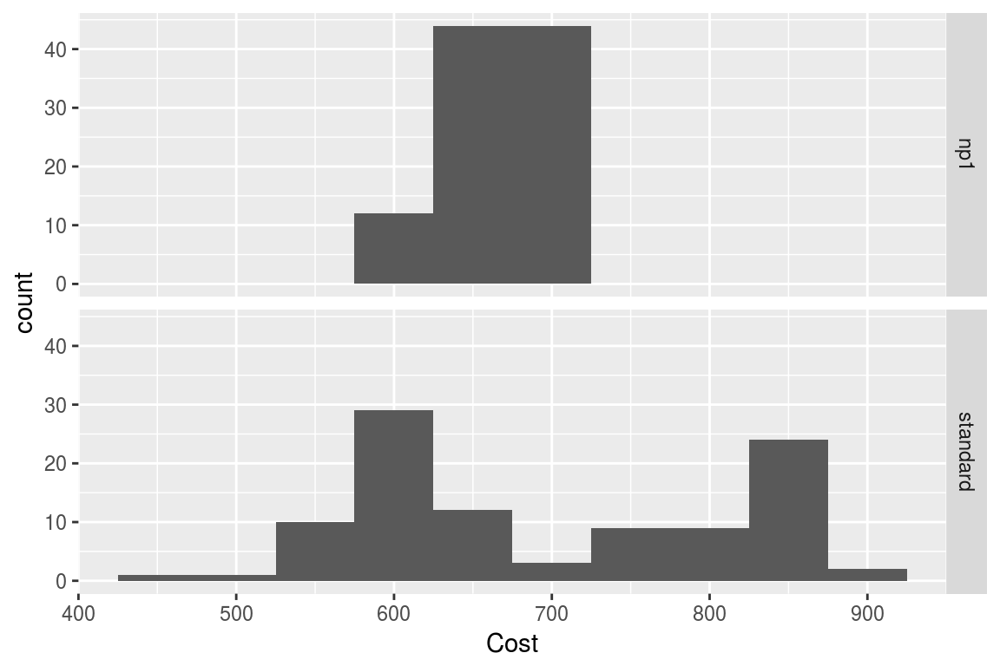

Heterogeneity & Demographic Analysis
2017-05-09
Introduction
Heterogeneity analysis is a way to explore how the results of a model can vary depending on the characteristics of individuals in a population, and demographic analysis estimates the average values of a model over an entire population.
In practice these two analyses naturally complement each other: heterogeneity analysis runs the model on multiple sets of parameters (reflecting differents characteristics found in the target population), and demographic analysis combines the results.
For this example we will use the result from the assessment of a new total hip replacement previously described in vignette("d-non-homogeneous", "heemod").
Population characteristics
The characteristics of the population are input from a table, with one column per parameter and one row per individual. Those may be for example the characteristics of the indiviuals included in the original trial data.
For this example we will use the characteristics of 100 individuals, with varying sex and age, specified in the data frame tab_indiv:
tab_indiv## # A tibble: 100 × 2
## age sex
## <dbl> <int>
## 1 84 1
## 2 55 0
## 3 60 1
## 4 74 1
## 5 75 1
## 6 58 0
## 7 68 0
## 8 52 0
## 9 61 1
## 10 59 0
## # ... with 90 more rowslibrary(ggplot2)
ggplot(tab_indiv, aes(x = age)) +
geom_histogram(binwidth = 2)
Running the analysis
res_mod, the result we obtained from run_model() in the Time-varying Markov models vignette, can be passed to update() to update the model with the new data and perform the heterogeneity analysis.
res_h <- update(res_mod, newdata = tab_indiv)## No weights specified in update, using equal weights.## Updating strategy 'standard'...## Updating strategy 'np1'...Interpreting results
The summary() method reports summary statistics for cost, effect and ICER, as well as the result from the combined model.
summary(res_h)## Loading required namespace: Hmisc## An analysis re-run on 100 parameter sets.
##
## * Unweighted analysis.
##
## * Values distribution:
##
## Min. 1st Qu. Median Mean
## standard - Cost 485.85297365 605.0062810 621.9893893 681.1972580
## standard - Effect 9.32287610 24.8754832 27.7806580 25.7637697
## standard - Cost Diff. - - - -
## standard - Effect Diff. - - - -
## standard - Icer - - - -
## np1 - Cost 603.34263272 635.5509751 640.1676766 657.2852824
## np1 - Effect 9.38064927 25.1436592 27.9754765 26.0142866
## np1 - Cost Diff. -160.47985885 -110.7286273 18.1782873 -23.9119756
## np1 - Effect Diff. 0.04405769 0.1948185 0.2168686 0.2505169
## np1 - Icer -352.23489020 -316.4394659 82.0897023 48.7806814
## 3rd Qu. Max.
## standard - Cost 802.3426777 871.8854128
## standard - Effect 29.0749005 31.3071020
## standard - Cost Diff. - -
## standard - Effect Diff. - -
## standard - Icer - -
## np1 - Cost 691.6140504 711.4055539
## np1 - Effect 29.5008365 31.5405654
## np1 - Cost Diff. 30.5446941 117.4896591
## np1 - Effect Diff. 0.3499204 0.4556047
## np1 - Icer 156.7853582 2666.7229585
##
## * Combined result:
##
## 2 strategies run for 60 cycles.
##
## Initial state counts:
##
## PrimaryTHR = 1000L
## SuccessP = 0L
## RevisionTHR = 0L
## SuccessR = 0L
## Death = 0L
##
## Counting method: 'end'.
##
## Values:
##
## utility cost
## standard 25763.77 681197.3
## np1 26014.29 657285.3
##
## Efficiency frontier:
##
## np1
##
## Differences:
##
## Cost Diff. Effect Diff. ICER Ref.
## np1 -23.91198 0.2505169 -95.45057 standardThe variation of cost or effect can then be plotted.
plot(res_h, result = "effect", binwidth = 5)
plot(res_h, result = "cost", binwidth = 50)
plot(res_h, result = "icer", type = "difference",
binwidth = 500)
plot(res_h, result = "effect", type = "difference",
binwidth = .1)
plot(res_h, result = "cost", type = "difference",
binwidth = 30)The results from the combined model can be plotted similarly to the results from run_model().
plot(res_h, type = "counts")
Weighted results
Weights can be used in the analysis by including an optional column .weights in the new data to specify the respective weights of each strata in the target population.
tab_indiv_w## # A tibble: 100 × 3
## age sex .weights
## <dbl> <int> <dbl>
## 1 62 0 0.6435215
## 2 53 0 0.1964005
## 3 62 0 0.3390838
## 4 55 1 0.2248957
## 5 83 0 0.7603354
## 6 63 1 0.8445155
## 7 64 1 0.5003306
## 8 59 0 0.1866288
## 9 67 1 0.1080727
## 10 55 0 0.6304182
## # ... with 90 more rowsres_w <- update(res_mod, newdata = tab_indiv_w)## Updating strategy 'standard'...## Updating strategy 'np1'...res_w## An analysis re-run on 100 parameter sets.
##
## * Weigths distribution:
##
## Min. 1st Qu. Median Mean 3rd Qu. Max.
## 0.005813 0.215561 0.476570 0.495896 0.785581 0.981229
##
## Total weight: 49.58956
##
## * Values distribution:
##
## Min. 1st Qu. Median Mean
## standard - Cost 485.85297365 613.836464 627.8444603 693.3373240
## standard - Effect 7.47256790 23.202253 27.7806580 25.9698148
## standard - Cost Diff. - - - -
## standard - Effect Diff. - - - -
## standard - Icer - - - -
## np1 - Cost 603.34263272 637.950820 641.9677188 660.7384121
## np1 - Effect 7.49009703 23.489433 27.9754765 26.2332976
## np1 - Cost Diff. -164.88137326 -110.728627 14.5509685 -32.5989118
## np1 - Effect Diff. 0.02468212 0.208543 0.2237991 0.2634827
## np1 - Icer -354.32431375 -316.439466 63.4214929 166.8112209
## 3rd Qu. Max.
## standard - Cost 802.3426777 886.2488085
## standard - Effect 29.4679999 31.4299400
## standard - Cost Diff. - -
## standard - Effect Diff. - -
## standard - Icer - -
## np1 - Cost 691.6140504 715.5033851
## np1 - Effect 29.9026402 31.9083414
## np1 - Cost Diff. 24.1143568 143.6441681
## np1 - Effect Diff. 0.3499204 0.4784013
## np1 - Icer 115.6325465 8194.5991768
##
## * Combined result:
##
## 2 strategies run for 60 cycles.
##
## Initial state counts:
##
## PrimaryTHR = 1000L
## SuccessP = 0L
## RevisionTHR = 0L
## SuccessR = 0L
## Death = 0L
##
## Counting method: 'end'.
##
## Values:
##
## utility cost
## standard 25969.81 693337.3
## np1 26233.30 660738.4
##
## Efficiency frontier:
##
## np1
##
## Differences:
##
## Cost Diff. Effect Diff. ICER Ref.
## np1 -32.59891 0.2634827 -123.7231 standardParallel computing
Updating can be significantly sped up by using parallel computing. This can be done in the following way:
- Define a cluster with the
use_cluster()functions (i.e.use_cluster(4)to use 4 cores). - Run the analysis as usual.
- To stop using parallel computing use the
close_cluster()function.
Results may vary depending on the machine, but we found speed gains to be quite limited beyond 4 cores.